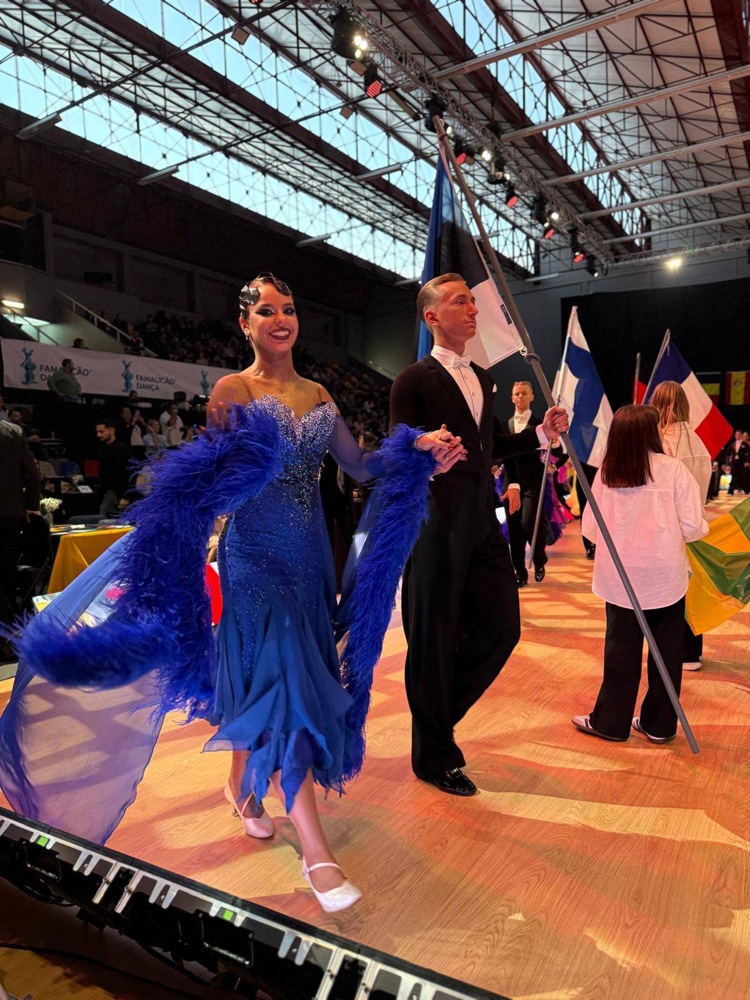

Applied in projects
OpenFOAM (RANS) and CalculiX in a working multi-fidelity pipeline; NSGA-II multi-objective optimization; MATLAB/Simulink; Python automation of solver workflows; Siemens NX and FreeCAD.
Mechanical engineering · TU Eindhoven · European defence & dual-use
Defence systems don't respect disciplinary boundaries — so neither do I. I'm a mechanical engineering student building deliberately wide capability across simulation, optimization, mechatronics, and systems engineering, all pointed at one goal: contributing to Europe's defence and dual-use industry.
Click any project to read the full breakdown ↓
OpenFOAM (RANS) and CalculiX in a working multi-fidelity pipeline; NSGA-II multi-objective optimization; MATLAB/Simulink; Python automation of solver workflows; Siemens NX and FreeCAD.
Requirements definition and flow-down, V-model verification planning, FMEA, trade studies and concept selection, mass/power/energy budget closure.
Engine test-bench measurement chains, signal conditioning and filter selection, uncertainty propagation, design of controlled comparisons.
Topology optimization (SIMP), surrogate modelling (GP/RBF), turbomachinery fundamentals, thermal management, embedded control on STM32/Arduino.
Now: final-year BSc Mechanical Engineering at Eindhoven University of Technology. Coursework and projects across the breadth of the discipline: fluids, structures, dynamics, control, and design.
How I work: I like problems where one engineer can own the whole loop — model it, verify it, build it, iterate. My propeller optimization pipeline is entirely self-initiated, and it's where most of my CFD, FEA and optimization tooling came from — well beyond the curriculum.
Where I'm headed: the European defence and dual-use industry — that part is decided. The breadth is deliberate: defence systems are integration problems, and I want to be the engineer who understands the aerodynamics, the structures, and the control loop. Estonian citizen with a foot in both the Brainport (Eindhoven) and Estonian defence-innovation communities.
Looking for: internships and student engineering roles at defence and dual-use companies — simulation, design, mechatronics, or test — anywhere in the European ecosystem.
I competed in Ten Dance for close to fifteen years — the discipline that asks for all five Standard dances and all five Latin, two techniques with almost nothing in common, scored as one. I was Estonian champion at under-21 and finished twelfth at the WDSF Under-21 World Championship in Ten Dance.
I stopped competing at the start of 2026. That was a decision rather than a drift: the hours it takes to stay at that level are the hours I now want in engineering.
What it actually built is less romantic than people expect — being corrected daily on details no audience would notice, delivering at full commitment in the fourth hour of a competition day, and working in a partnership whose only channel is physical and unforgiving of hesitation. I'd rather point at those habits than claim the sport taught me engineering.

Based in Eindhoven, connected to Tallinn. If you're building for European defence — hardware, simulation, or anywhere in between — let's talk.